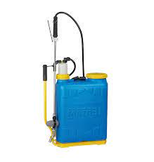
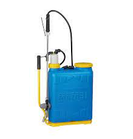

Olivares Santos Grampha´s
Toda niñez debe ser capaz de organizar las diferentes actividades en
una finca de olivos, comenzando desde la etapa de plantación de olivos
venciendo los diferentes obstáculos que se les presentan, hasta el
logro del retoño.


 
